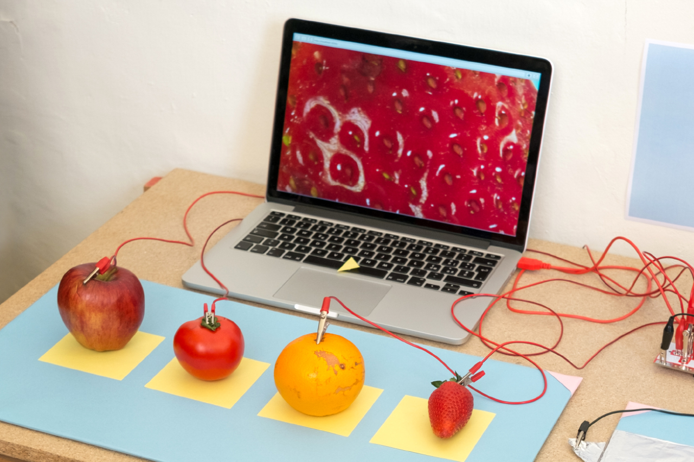
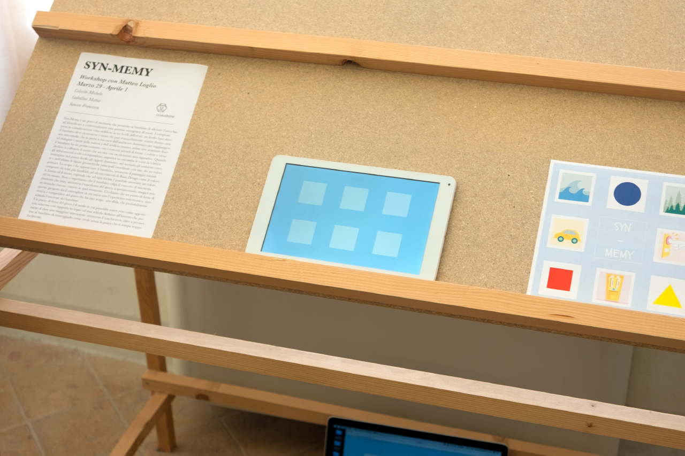
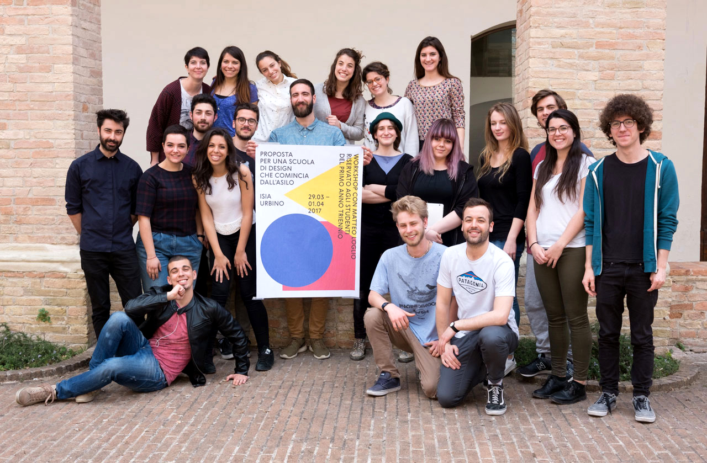

Proposta
per una scuola di design
che comincia dall'asilo
ISIA Urbino
29/03 - 01/04/17
A cura di Matteo Loglio
e Lorenzo Bravi
Nel 1974 Bruno Munari scrive per Domus un breve articolo dal titolo "Proposta per una scuola di Design che comincia dall’asilo", nel quale viene sottolineata l’importanza di avvicinarsi fin da piccoli all’idea di progetto. Parlando in particolare di progettazione grafica, non si può non notare di come ormai tutti siamo diventati produttori di comunicazione visiva. Se l’alfabetizzazione svolta nelle scuole insegna la grammatica del linguaggio verbale, l’attenzione rivolta verso quella per la comunicazione visiva è ancora bassa. Il workshop cerca di interrogarsi su questi temi e capire come oggi, attraverso l’uso delle nuove tecnologie, sia possibile stimolare e sviluppare fin da piccoli queste capacità.
progetti
I seguenti progetti sono stati realizzati in un giorno e mezzo, da ventiquattro studenti del primo anno del triennio di Design Grafico, sotto la guida di Matteo Loglio e Lorenzo Bravi. Per ogni progetto è stato realizzato un prototipo funzionante, utilizzando strumenti di prototipazione tra cui p5.js e MakeyMakey.
Il codice dei progetti è disponibile sotto licenza open source, e si trova qui.
ZOOMZoOM

ZoomZoom aiuta i bambini a scoprire il mondo delle textures, mettendo in correlazione un dettaglio mostrato nello schermo, con il frutto reale. L'interfaccia è composta dai frutti stessi, che connessi ad una MakeyMakey, fungono da bottoni per una applicazione che mostra la texture di riferimento.
Tramite una serie di messaggi visivi e sonori, il giocatore può intuire se la sua deduzione è esatta.
ZoomZoom abitua il bambino ad una visione più attenta della texture nella sua quotidianità, creando un collegamento fisico con l’immagine virtuale, sviluppando e allenando i sensi del tatto e della vista.
Syn-Memy

Syn-Memy è un gioco per sviluppare la memoria sonora, allenando l’orecchio ad identificare e contestualizzare diversi suoni.
Il progetto si sviluppa in tre livelli consecutivi, caratterizzati da tre diverse categorie di suoni. Nel primo livello si gioca con i rumori della casa, per poi passare ai fruscii della natura, ed infine ad un livello più astratto, dove i concetti di forma e colore invitano a collegare il suono ad un elemento non figurativo.
Syn-Memy permette al bambino di familiarizzare con alcuni concetti di Basic Design come colore, forma e suono, creando una sinestesia tra il mondo visuale e quello auditivo.
Il prototipo è stato sviluppato per dispositivi touch screen, in p5.js
Hue Play
Hue Play è un gioco per avvicinare i bambini alle proprietà del colore e della tinta, sviluppando la percezione visiva. Lo scopo del gioco è di avvicinarsi il più possibile ad un colore di riferimento, modificando la tinta del proprio colore. Il progetto è pensato per due giocatori: vince chi manipolando la tinta di riempimento del proprio quadrato si avvicina di più ad un colore generato a random. Il pulsante è posto lontano dallo schermo, per introdurre una componente motoria, obbligando i concorrenti a correre per raggiungere il bottone e fermare il gioco. Nell'interfaccia vi sono due quadrati, uno per ogni giocatore, ed un colore di riferimento posto al centro per aiutare i bambini ad accorgersi della somiglianza. Hue Play è un gioco ideale per tutte le età, nazionalità e diverse abilità, permettendo di sviluppare una sensibilità alla questione della tinta e del suo spettro.
Scala giochi
Scala giochi è un gioco progettato per introdurre i bambini al concetto di scala, in particolare sulle dimensioni di un elemento relative ad un determinato contesto.
Partendo da alcune sperimentazioni sulle proporzioni create durante il corso di Basic Design, abbiamo deciso di trasformare questi concetti in un gioco.
Il bambino si trova davanti un oggetto inserito in diversi contesti, e può decidere di ingrandirlo, rimpicciolirlo o riposizionarlo a seconda dei casi.
Tramite il gioco è portato a ragionare sul concetto di proporzione e dunque sui rapporti tra gli elementi all’interno di un immagine.
Il bambino è libero di sperimentare con le dimensioni, creando sia immagini realistiche che immagini in cui l’oggetto ha proporzioni molto distanti dal vero.
Touch the sound

Touch the sound permette ai bambini di sperimentare con la sinestesia, ossia la capacità di accostare due elementi appartenenti a due sfere sensoriali differenti, in questo caso tatto e udito.
Il gioco è composto da una serie di sei scatole chiuse, contenenti oggetti conduttivi di vari materiali; quando il bambino inserisce la mano nella scatola, toccando un oggetto, un suono viene riprodotto.
Il suono evoca una sensazione analoga all'oggetto stesso oppure l’ambiente ad esso collegato.
Touch the Sound ha dunque lo scopo di stimolare la curiosità e di educare e allenare i bambini a trovare connessioni tra i sensi, in questo caso l’udito e il tatto, spesso considerati secondari rispetto alla vista.
Play my look

Play my look è un gioco progettato per apprendere le variabili visive alla base della progettazione grafica. Jacques Bertin, importante cartografo e teorico francese, nel suo scritto "Semiology of Graphics" individua forma, scala, rotazione, tinta, valore, texture e posizione come gli atomi fondamentali di ogni artefatto grafico. A partire dai suoi studi abbiamo quindi scelto di prendere in considerazione forma, scala, rotazione e tinta - in quanto abbiamo ritenuto essere le più facili da individuare per un bambino - e abbiamo creato un'applicazione che permette di giocare liberamente con esse. La struttura del programma è molto semplice: al centro dello schermo c'è una forma, e schiacciando determinati tasti se ne alterano alcune delle sue proprietà. Per rendere più tangibile il gioco sono stati introdotti dei pulsanti fisici che regolano la variazione delle grandezze prese in considerazione. Inoltre, per rendere più piacevole l'esperienza, ciascuno di questi tasti è stato collegato ad un oscilloscopio digitale. In questo modo, alla pressione del pulsante viene generata una nota la cui durata è pari alla durata della trasformazione: l'idea è che collegando l'ambito visivo, sonoro e uditivo si possa stimolare nel bambino una curiosità orientata ad ambiti diversi e molteplici.
psychedelic rgb

Psychedelic RGB é uno strumento di disegno che permette ai bambini di esplorare la sintesi additiva del colore. Solitamente i bambini imparano la sintesi sottrattiva mescolando i colori da disegno; con Psychedelic RGB invece possono disegnare mescolando i colori in modalità RGB.
team
